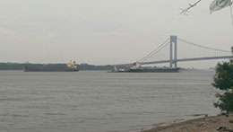
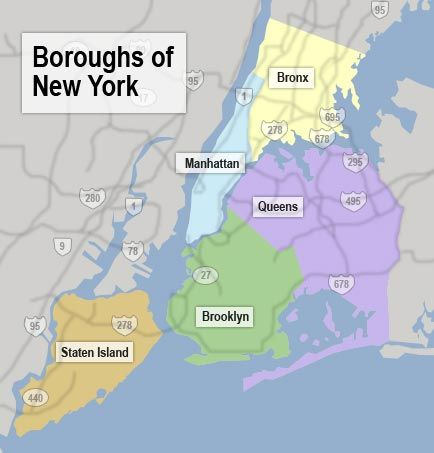

| Smartphone: | Samsung S10 |
| Hardware: | HP Pavillion with Win 10 OS |
| Software: | Adobe Photoshop CC Version 20.0.3 |
This is a picture I took of the Verrazano Narrows Bridge while I was visiting my family in June of 2015. I had taken it with my phone and uploaded it into the hard drive of my computer. The Photoshop tools I used to edit it were: Place Embedded, Crop, Hue/Saturation, Image Size, and Save as.
| Before | After |
|---|---|
|  | |
I wanted to share why the image of the bridge is so important to me, so I decided to find a map of NYC on the internet. I went to Google Images, serached for and located a map I liked, and downloaded in to my computer. For this image, in addition to the tools I had used before, I was able to add and rename layers. And, I added both images and text...including the source of the image.
| Before | After |
|---|---|
|  |  |